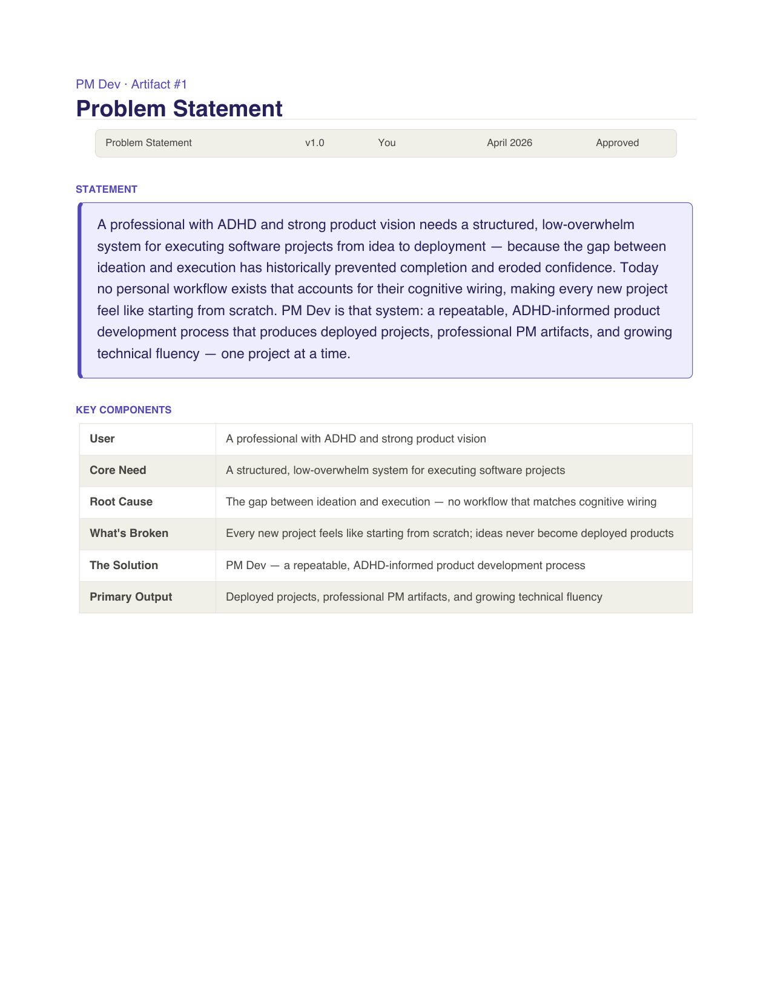
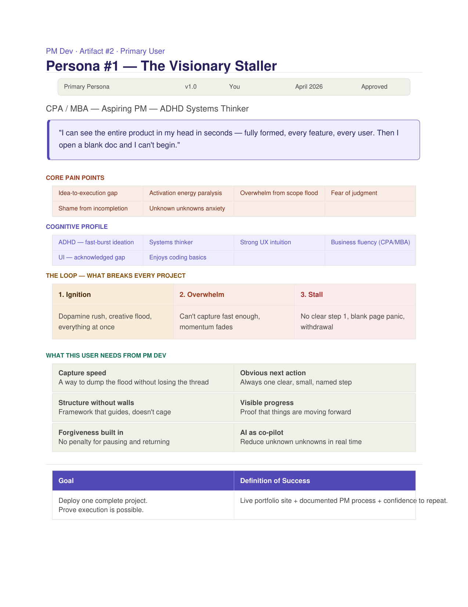
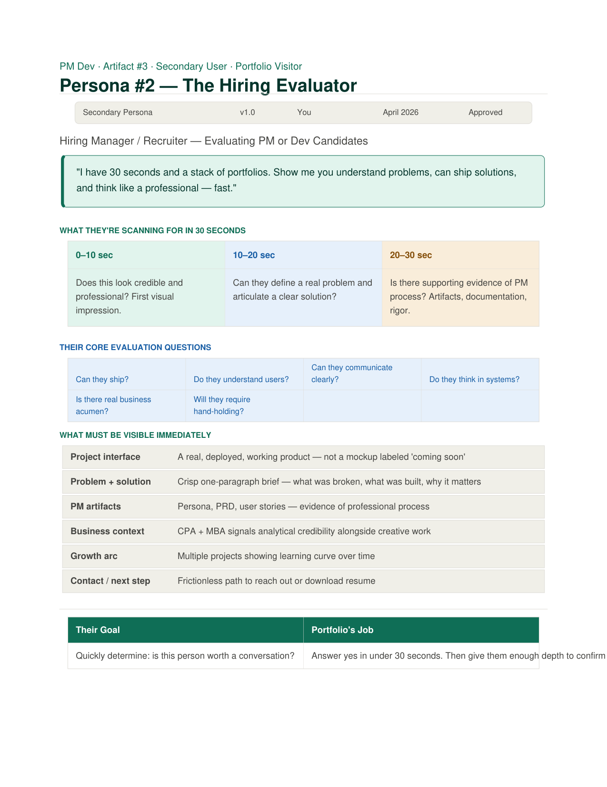
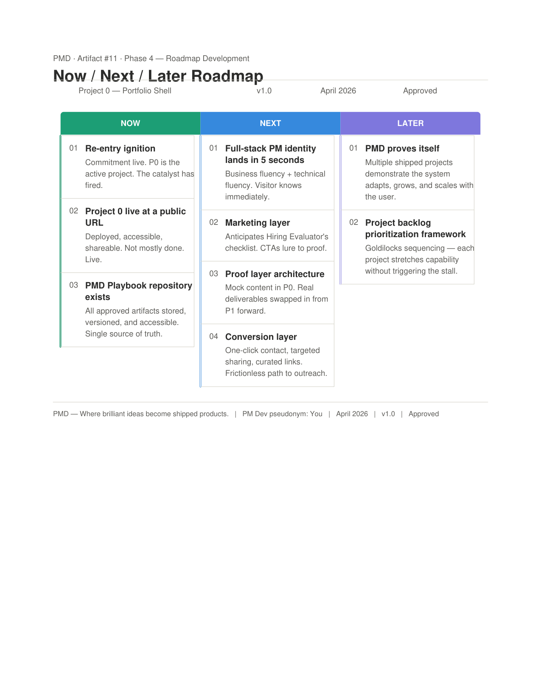
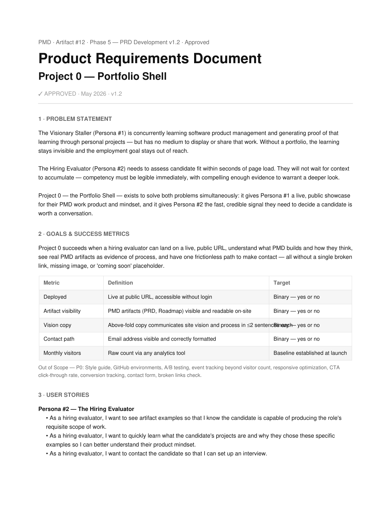

Problem
Statement

Persona —
Visionary Staller

Persona —
Hiring Evaluator

Now / Next /
Later Roadmap

Product
Requirements
Problem Statement
The problem isn't a missing portfolio — it's a broken execution loop.
A professional with strong product vision and focus challenges has no
system that matches their cognitive wiring, so every project stalls
before it ships. PMD is the proposed solution.
Grounding the entire system in a single, honest problem statement was
non-negotiable. If the problem isn't real and specific, nothing that
follows has a reason to exist. This one does.
Persona — The Visionary Staller
The primary user isn't a generic "aspiring PM." They're someone who
can map a full product in seconds and then freeze at a blank doc.
The persona names the loop — ignition, overwhelm, stall — and defines
exactly what breaks it.
A persona that doesn't make you uncomfortable isn't specific enough.
This one is specific enough.
Persona — The Hiring Evaluator
The secondary user has thirty seconds and a stack of portfolios. The
persona maps their scan pattern second by second and names the six
questions they're silently asking. This portfolio is built to answer
all six.
Most candidates build for themselves. This persona exists to ensure
every design decision on this site serves the person who decides
whether it's worth a conversation.
Now / Next / Later Roadmap
Three horizons, deliberately sequenced. Now is a live URL and a real
repository. Next is the marketing and proof layers that make it
credible. Later is the system proving it scales beyond a single
project.
A roadmap that starts with "full-stack PM identity" before the site
exists is a fantasy. This one starts with deployed and works outward.
Sequence is the decision.
Product Requirements Document
Eight functional requirements, five technical decisions, one
non-negotiable accessibility standard. Includes a documented
tradeoff — professional tooling deferred to P1 in service of
shipping P0 under constraint.
The tradeoff section is the most important part. Any PM can list
requirements. Documenting what you chose not to build, and why,
is where product thinking becomes visible.
Appendix — The PMD Playbook
Every approved artifact. Every decision. The complete record of how PMD works.